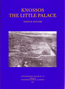

Eleni M. Hatzaki
Knossos: The Little Palace
British School at Athens Supplementary Volume No. 38: Oxford, UK, 2005
 |
This volume presents the results of the excavations of Areas H and K in the 1968 and 1969 seasons, and is the sixth and final volume of the Ashdod series. Regrettably, this publication appears more than thirty five years after the end of excavations. The work on the volume was initiated by Moshe Dothan, assisted by Marina Popovitz, during the early 1990s, but due to Dothan 's illness and his passing away in 1999, the work was suspended. Towards the end of 1999, with the encouragement of Trude Dothan, the aid of the Israel Antiquities Authority, and a generous grant from the White-Levy Program for Archaeological Publications, work on the material was resumed. The final stages toward the completion of the volume were carried out during the years 2000-2002. Amihai Mazar, area supervisor in the 1968-1969 seasons, prepared the draft of the stratigraphic report on Area H, Strata XIV-X. Subsequently, the plans, drawings and photographs were revised and the text was completed. The results of the 1968 season of excavations in Area K, which is adjacent to and inseparable from Area H, were added to the report. Though the format of the previous volumes of the Ashdod publication was generally followed, several changes were introduced in order to adapt a more modern format and new technologies. Thus, this volume is published in the larger format of the IAA Reports. As the work on the volume continued through an extensive period, there are some minor incongruities in the style of drawings, photographs and plans. Some of the field photographs could not be located and some of the documentation needed to be partly restored (particularly field sections). Several groups of finds were entrusted to specialists and are described in their respective chapters: jewelryA. Golani and D. Ben-Shlomo: flints-Z. Matskevich; scarabs-O. Keel and S. Monger; coins-D.T. Ariel; and animal bones-E. Maher. The burial, analyzed by E. Dueitch, appears in the stratigraphic report. The plans and sections were prepared for publication by draftsmen of the Israel Antiquities Authority, Natalia Zak and Elizabeth Belashov. Recent drawings and amendments are by Noga Ze'evi and Marina Zeltzer. Photographs of the finds from the 1980s onward are by Tsila Sagiv and Clara Amit, while the earlier photos of the finds were taken by Ze'ev Radovan. Ella Altmark cleaned and restored some of the metal finds. Though this is the final volume describing the excavations at Tel Ashdod, large quantities of material, coming from poor or unstratified contexts and surveys, chiefly from Areas G, K and M, remain as yet unpublished. Hopefully, at least the most important of these finds will soon be published elsewhere. |
| Back to Publications | Table of Contents |